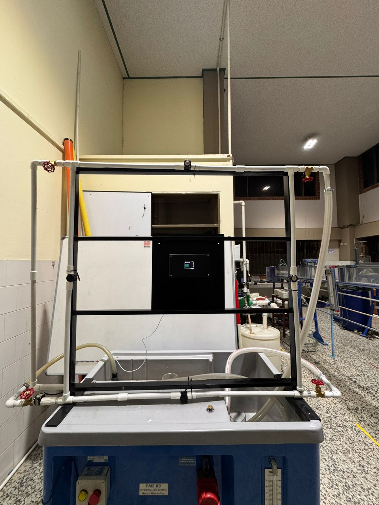

Aplicación de IoT en el monitoreo de un modelo hidráulico experimental basado en el método de Hardy Cross
| Información Proyecto | Tiempo real |

El presente proyecto tiene como finalidad el desarrollo de un sistema de monitoreo en tiempo real aplicado a un modelo hidráulico experimental, utilizando tecnologías de Internet de las Cosas (IoT) y la plataforma Arduino (ESP32).
Se integraron sensores de caudal tipo YF-S201, una pantalla TFT para visualización local, un módulo lector de microSD para respaldo de datos, y conexión a la plataforma ThingSpeak para la supervisión remota.
Los datos obtenidos fueron analizados mediante el método iterativo de Hardy Cross con el fin de verificar el equilibrio hidráulico en redes cerradas de tuberías.
Esta propuesta demuestra cómo la automatización y la IoT pueden mejorar la precisión, eficiencia y accesibilidad del monitoreo en sistemas hidráulicos, representando una alternativa moderna frente a métodos tradicionales.